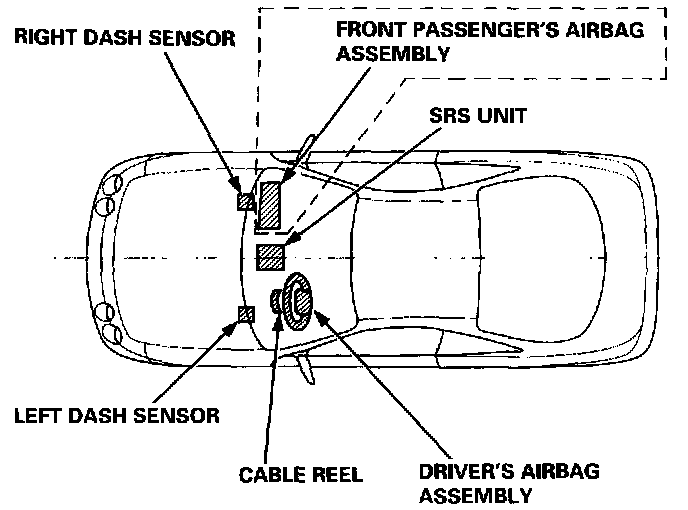
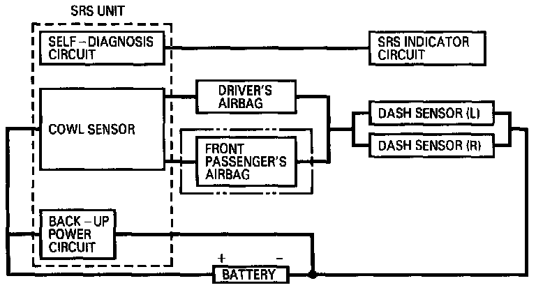

Air Bag Systems: Description and Operation
DESCRIPTION
The SRS is a safety device which, when used in conjunction with the seat belt, is designed to help protect the driver and front passenger in a frontal impact exceeding a certain set limit. The system consists of left and right dash sensors, the SRS unit (including a cowl sensor), the cable reel and driver's airbag, and a front passenger's airbag in all models except the RS for Canada.
OPERATION

As shown in the diagram, the left and right dash sensors are connected in parallel. The parallel set of sensors is connected in series to each airbag inflator circuit and the car battery. In addition, a back-up power circuit is connected in parallel with the car battery. The back-up power circuit and the cowl sensor(s) are located inside the SRS unit.
For the SRS to operate:
(1) One or both sets of cowl sensor contacts must close, and one or both dash sensors must activate.
(2) Electrical energy must be supplied to the airbag inflator(s) by the battery, or the back-up power circuit if the battery voltage is too low.
(3) The inflator charge(s) must ignite and deploy the airbag(s).
It takes about 0.1 second from the beginning of an airbag's deployment until it is completely deflated.
SELF-DIAGNOSIS SYSTEM

A self-diagnosis circuit is built into the SRS unit; when the ignition switch is turned ON (II), the SRS indicator light comes on and goes off after about six seconds if the system is operating normally. If the light does not come on, or does not go off after six seconds, or if it comes on while driving, it indicates an abnormality in the system. The system must be inspected and repaired as soon as possible.